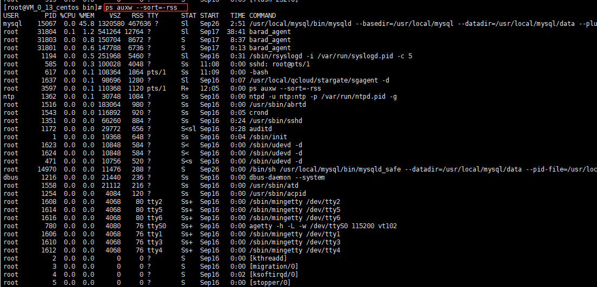

具体命令：ps auxw --sort=-rss 功能描述：查看所有进程并且按照占用物理内存大小（不包含虚拟内存）从大到小排序
补充说明：--sort=-rss表示按照物理内存大小（不包含虚拟内存）从大到小排序，如果是--sort=+rss则按照物理内存大小（不包含虚拟内存）从小到大排序
补充说明：--sort=-%cpu表示按照进程占用cpu百分比大小从大到小排序，如果是--sort=+%cpu则按照进程占用cpu百分比大小从小到大排序
补充说明：--sort=-vsz表示按照虚拟内存大小从大到小排序，如果是--sort=+vsz则按照虚拟内存大小从小到大排序
